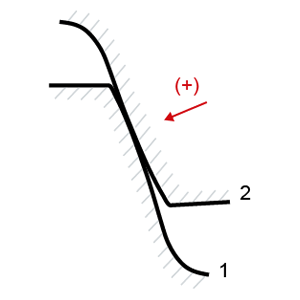
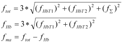

|
|
|


考虑制造误差的KHß计算
根据 ISO 6336-1(E)，导程变化（fHb）和轴偏移（fma）误差也在啮合平面中被考虑。在这种情况下，它们的综合影响将在五种情况下被计入齿面间隙中：
- 情况 1：fma = fHb = 0，即无误差
- 情况 2：fma = |fma|，fHb = |fHb|，因此两个误差均为正值
- 情况 3：fma = +|fma|，fHb = -|fHb|
- 情况 4：fma = -|fma|，fHb = +|fHb|
- 情况 5：fma = -|fma|，fHb = -|fHb|，因此两个误差均为负值
在全部五种情况下计算齿向载荷分布系数 KHß，并选取最大值作为齿轮副的齿向载荷分布系数。
从公共接触点观察，正方向始终指向小齿轮实体（材料）所在的方向。

图15.17：正方向的定义
在全部五种情况下，制造误差都会记录在报告以及间隙和载荷分布图形中。
建议的 fhb 和 fma 值
点击 |fHb| 输入字段旁边的“尺寸计算”按钮，可显示 fHb 和 fma 的可用数据建议。
“最大值” 显示 fHb 和 fma 的最大可能值。这些值来源于两个齿轮的 fHbT（螺旋线斜率偏差）公差以及轴线对中公差（fΣβ 和 fΣδ）。
“静态评估”的建议 显示可能的最大值（99.7%概率）。此建议值的计算方法如下：

Calculation of KHß with manufacturing errors
According to ISO 6336-1(E), the lead variation (fHb) and shaft misalignment (fma) errors are also taken into account in the plane of action. In such a case, their combined effect is taken into account for the flank gap in five cases:
- Case 1: fma = fHb = 0, i.e. no error
- Case 2: fma = |fma|, fHb = |fHb|, so positive values for both errors
- Case 3: fma = +|fma|, fHb = -|fHb|
- Case 4: fma = -|fma|, fHb = +|fHb|
- Case 5: fma = -|fma|, fHb = -|fHb|, so negative values for both errors
The face load factor KHß is calculated for all five cases, and the maximum value is selected as the face load factor of the gear pair.
The positive direction always lies in the direction of the pinion's material, seen from a common point of contact.
Figure 15.17: Definition of the positive direction
In all five cases, the manufacturing error is documented in the report and in the gaping and load distribution graphics.
Proposed value for fhb and fma
Click on the Sizing button next to the input field for |fHb| to display suggestions of usable data for fHb and fma.
"Maximum" shows the largest possible values for fHb and fma. The values are derived from the fHbT (helix slope deviation) tolerances of the two gears and from the axis alignment tolerance (fΣβ and fΣδ).
The "statically evaluated" proposal displays the probable maximum values (99.7% probability). This proposal is calculated as follows: